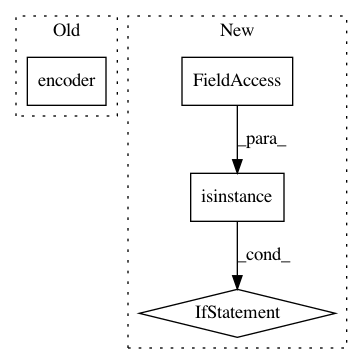

f6415170f7f90124e9cdb9ccd37cd867852b7657,train.py,,,#,19
Before Change
for key in batch:
batch[key] = Variable(batch[key].cuda())
enc_out = encoder(batch["img_feat"], batch["ques_fwd"], batch["hist"])
dec_out = decoder(enc_out, batch["opt"])
cur_loss = criterion(dec_out, batch["ans_ind"].view(-1))
cur_loss.backward()
After Change
if args.gpuid >= 0:
for key in batch:
if not isinstance(batch[key], list):
batch[key] = Variable(batch[key].cuda())
enc_out = encoder(batch)
dec_out = decoder(enc_out, batch)
cur_loss = criterion(dec_out, batch["ans_ind"].view(-1))
cur_loss.backward()
In pattern: SUPERPATTERN
Frequency: 3
Non-data size: 4
Instances
Project Name: batra-mlp-lab/visdial-challenge-starter-pytorch
Commit Name: f6415170f7f90124e9cdb9ccd37cd867852b7657
Time: 2018-07-08
Author: karandesai281196@gmail.com
File Name: train.py
Class Name:
Method Name:
Project Name: batra-mlp-lab/visdial-challenge-starter-pytorch
Commit Name: 42fc102b56aadde323fa695d35e109c5bfb13e7c
Time: 2018-07-08
Author: karandesai281196@gmail.com
File Name: train.py
Class Name:
Method Name:
Project Name: rusty1s/pytorch_geometric
Commit Name: fb8a67e3619b7da106f5212c524eb0b70e7abd32
Time: 2019-04-19
Author: matthias.fey@tu-dortmund.de
File Name: torch_geometric/nn/models/deep_graph_infomax.py
Class Name: DeepGraphInfomax
Method Name: forward